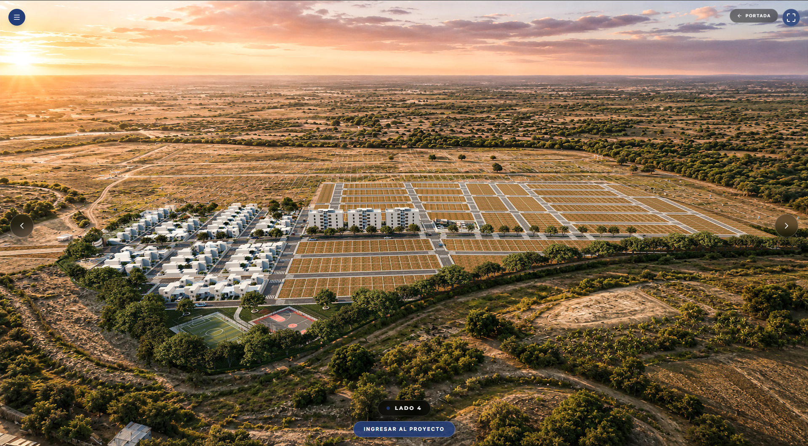
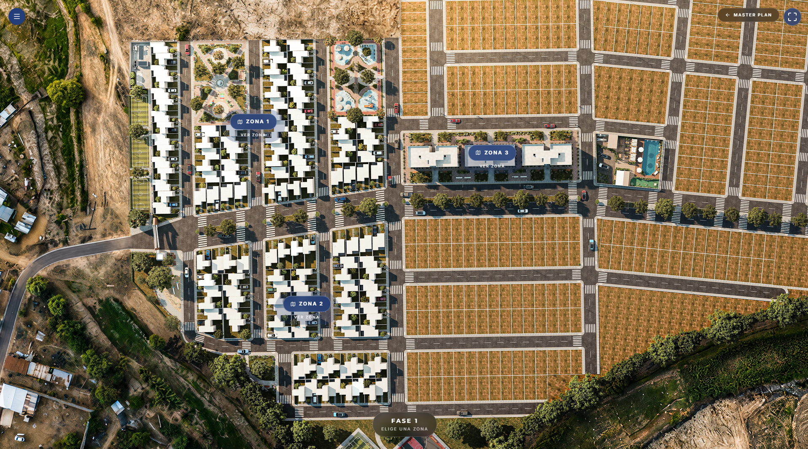
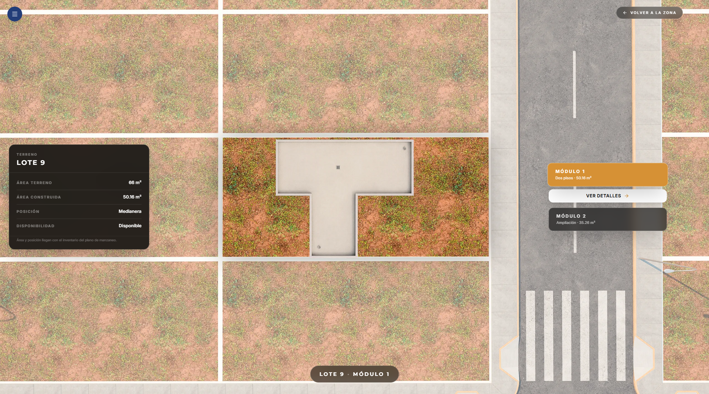
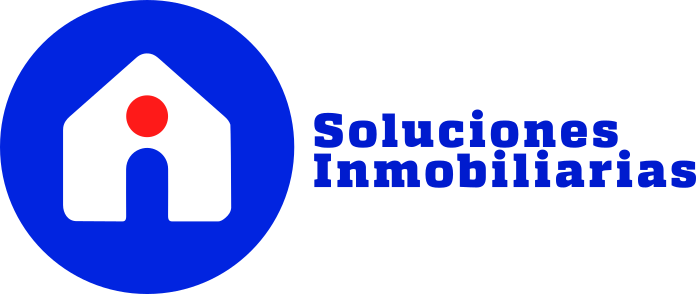

Vista general y masterplan
Una vista 3D del conjunto ayuda a entender la escala, las etapas, las vías y la relación entre las áreas del proyecto.

SHOWROOM VIRTUAL / HORIZONTALES
Presentamos masterplan, lotes, amenidades y entorno en una experiencia 3D fácil de recorrer.
Ver showrooms ↓PROYECTO HORIZONTAL / EL OLIMPO
Recorre el masterplan real, explora las etapas y conoce cómo se organiza el proyecto.
El recorrido carga dentro de esta página. Usa los controles propios del showroom para explorar.
EXPLORA / HORIZONTAL
Elige una función para ver qué puede descubrir tu cliente.
El masterplan ubica etapas, manzanas, vías y áreas comunes.
QUÉ DESARROLLAMOS PARA TI
Diseñamos una experiencia a la medida de tu proyecto. Descubre cómo conectamos cada parte.

Una vista 3D del conjunto ayuda a entender la escala, las etapas, las vías y la relación entre las áreas del proyecto.
Un mapa ayuda a ubicar accesos, vías principales, servicios y referencias próximas al proyecto.

El recorrido puede organizarse por manzanas o sectores para que el cliente llegue rápido al lote que le interesa.
Las vistas de club house, piscina y espacios compartidos muestran cómo será la vida dentro del proyecto.

Cada lote puede presentar su ubicación, área, características y disponibilidad para facilitar la conversación comercial.
Integramos panoramas, renders y videos disponibles para que el equipo presente el proyecto con más contexto.
TAMBIÉN PARA TU EQUIPO
Administra contenidos, disponibilidad y métricas del proyecto desde el dashboard.
Conoce el dashboard ↗Explorar showroom ↗OI Soluciones Inmobiliarias Horizontal
Próximamente Horizontal
INMOBILIARIAS QUE CONFÍAN EN RVISIOON


EL SIGUIENTE PASO
Conversemos sobre la arquitectura y la información que necesita tu proyecto para presentarse mejor.